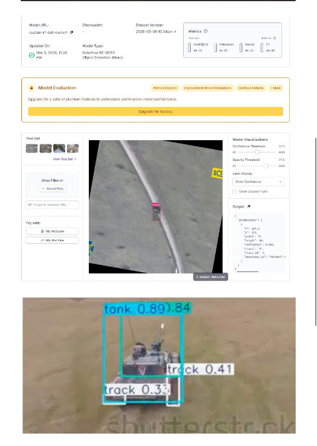
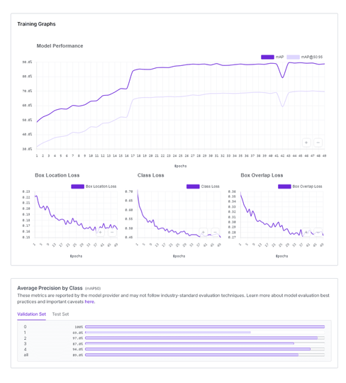
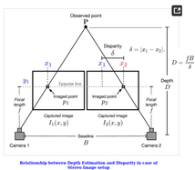
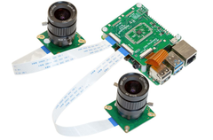

Amanullah Naseer Computer & Software Engineer
Autonomous UAVs • Edge Vision • High-Rate Telemetry
Autonomous UAVs • Edge Vision • High-Rate Telemetry
I build end-to-end intelligent flight and perception systems operating under rigorous physical constraints. My work bridges PX4/ArduPilot autopilot integration, NVIDIA Isaac Sim digital twins, RF-DETR / TensorRT sub-component tracking on Jetson & Coral EdgeTPU, and PyQt6 ground control stations consuming 50+ Hz telemetry feeds without event loop stutter.
// Real-time MAVLink State Decoupling
[PUB/SUB] ZMQ Sub port 5556 active (55.4 Hz)
[KALMAN] State Vector Est: X=12.44m Y=-4.18m Z=28.50m
[VISION] Target: Tank (0.89) | Turret (0.84) | Track (0.41)
[SERVO] Offboard Yaw Rate Cmd: +0.14 rad/s ($dx/dy$ Lock)
[UI-AGG] Circular Ring Buffer: 20.0 FPS (0 dropped msgs)
Actual recordings validating closed-loop Software-in-the-Loop (SITL) flight control and real-time aerial target tracking pipelines.
Split-screen architecture: Left window executes the Kamikaze FPV Strike Controller with real-time pixel offset calculation ($dx/dy$) and MAVLink manual override. Right window runs NVIDIA Isaac Sim physics to validate target acquisition and visual servoing prior to physical field hardware tests.
Real-time inference and Kalman association tracking of high-velocity armored targets from an aerial perspective. Granular model trained to distinguish between whole vehicles and sub-components (Tank, Turret, and Track) for terminal guidance applications.
Instead of treating targets as single bounding boxes, the custom RF-DETR Nano model detects granular components (Tank, Turret, Track) to enable precision terminal guidance.

● Tank: 89.0% AP | ● Turret: 97.0% AP | ● Track: 69.0% AP
Outputs normalized JSON telemetry stream for companion computer guidance loops.

Smooth convergence across Box Location Loss, Class Loss, and Overlap Loss.
Trained with Roboflow data augmentations (scaling, rotation, brightness) for outdoor robustness.
Hands-on engineering across companion computers, dual-camera depth estimation, gimbal controllers, and GPS-denied autonomous navigation.
Developed a dual MIPI-CSI camera setup on Raspberry Pi 5 to calculate real-time target distance and dimensions without relying on heavy LiDAR payloads: Depth = (focal_length × baseline) / disparity


Implementing real-time 3D mapping and autonomous path planning (SLAM3R / V-SLAM) in jammed or GPS-denied operational zones. Point clouds provide dynamic obstacle avoidance and stable local positioning without GNSS signals.
Production field engineering delivering server-client architectures for swarm drones, custom payload SDK integration, and zero-latency video streaming across field devices:
Each project repository includes production ASCII architecture diagrams, benchmark verification data, and runnable reproduction scripts.
High-fidelity simulation-in-the-loop (SITL) platform coupling NVIDIA Isaac Sim with PX4 autopilot firmware and offboard ROS2 Humble nodes for risk-free pre-flight target intercept validation.
Deployment pipeline for real-time target detection and continuous tracking on Jetson AGX Orin, incorporating INT8/FP16 quantized YOLO/RF-DETR engines and BoT-SORT Kalman association.
Modular desktop GCS consuming 50–60 Hz telemetry feeds without event loop stutter. Uses decoupled QThread telemetry workers and throttled 20 Hz state aggregators with emergency bypass.
How hardware-software decoupling solves event loop starvation and latency jitter in production systems.
When raw MAVLink telemetry packets are emitted at 50–60 Hz across multiple UAV channels, streaming them directly into the GUI thread causes the Qt event loop to choke on repetitive paint calls, producing visual lag and delaying critical operator inputs.
[ UAV MAVLink Stream (50-60 Hz) ]
│
▼
┌──────────────────────────────────────────────┐
│ Network Worker QThread (Non-blocking ZMQ) │
│ - Packet deserialization & CRC verification │
└──────────────────────┬───────────────────────┘
│
┌───────────────┴───────────────┐
▼ ▼
[ Telemetry Ring Buffer ] [ High-Priority Bypass ]
(Atomic State @ 50 Hz) (Emergency / Safety Alarms)
│ │
▼ (Aggregated @ 20 Hz) ▼ (Instant Signal)
┌──────────────────────────────────────────────┐
│ PyQt6 Main Event Loop │
│ - 20 Hz Instrument & Map Paint (0% lag) │
│ - Zero-latency Emergency Handler │
└──────────────────────────────────────────────┘
Standard OpenCV image decoding copies pixels through the CPU, introducing 15-25ms latency per frame before inference even starts. On companion computers like Jetson Orin or Rockchip RK3588, this exhausts thermal budgets.
[ Sony IMX Camera ] ──(MIPI-CSI Raw Data)──► [ Hardware ISP ]
│
▼
[(Shared RAM Buffer)]
│
(Direct Zero-Copy Pointer)
▼
[ NPU / TensorRT Core ]
│
(BBox X, Y Coordinates)
▼
[ Pixhawk FCU ] ◄──(MAVLink UART)── [ CPU: PID Math & Vector ]
Physical drone flight tests for autonomous target tracking carry severe hardware crash risks and unpredictable wind/lighting variables. Developing algorithms directly on hardware slows iteration cycles.
┌─────────────────────────────────────────────────────────────┐
│ NVIDIA Isaac Sim 4.0.1 (RTX Physics & Camera Simulation) │
└──────────────┬───────────────────────────────▲──────────────┘
│ (Synthetic Image) │ (Velocity Cmd)
▼ │
┌──────────────────────────────┐ ┌─────────────┴──────────────┐
│ Perception Node (ROS2 / YOLO)│ │ PX4 SITL Flight Controller │
└──────────────┬───────────────┘ └─────────────▲──────────────┘
│ (Target BBox) │ (MAVLink Offboard)
▼ │
┌──────────────────────────────────────────────┴──────────────┐
│ Visual Servoing & Guidance Node (PID Controller) │
└─────────────────────────────────────────────────────────────┘
Technologies, protocols, and embedded platforms utilized across commercial UAV and vision projects.